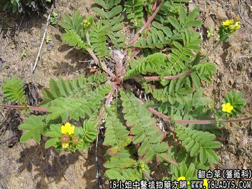

【中药概述】
翻白草为蔷薇科草本植物翻白草的带根全草。甘、微苦。归胃、大肠经。
1.清热解毒：用于痈疽肿毒，肺热咳嗽，疟疾，肺痈，疮癣，白带，瘰疬结核，疥癣等症。
2.凉血止血：用于吐血，衄血，便血，崩漏，以及创伤出血等。
此外，用治细菌性痢疾、阿米巴痢疾、肠炎等。
【临证应用】
治颈淋巴结核。取翻白草50g，用黄酒750毫升浸泡一昼夜，汤炖1小时许，以无酒味为度，加红糖适量，1次或分数次1日服完。隔日1次，连15剂。
【化学成分】
根含鞣质及黄酮类。
【用量用法】
本品9——26g，水煎服，或入剂。外用适量。